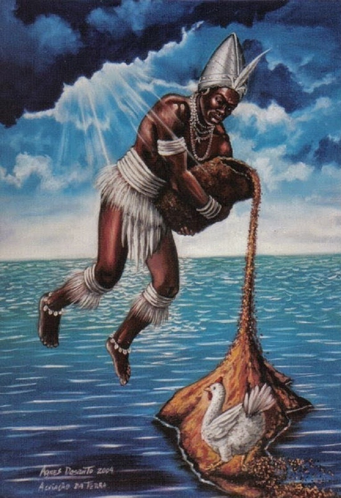
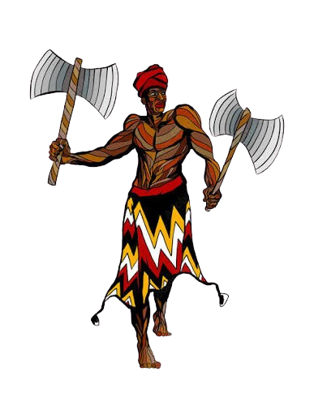

Yoruba mythology is a complex system of oral and religious traditions originating in West Africa (present-day Nigeria and Benin); this mythology established a fundamental basis for African-derived religions such as Candomblé and Umbanda. The Yoruba universe is divided into two main spheres: Orun (the spiritual and invisible world) and Aiye (the material and physical world where humans live).
Creation of the universe

The Yoruba creation myth recounts that Olodumare—also known as Olorum—ordered Obatala to build the Earth. Over the course of four days, Obatala scattered soil over the existing swamps and waters, creating Aiye, the world of humans. Olorum sent the oil palm tree to these lands and created the Sun and the rain to make it grow. With the Sun and the rains, forests, savannas, and valleys emerged. Obatala used clay to mold a man and a woman and breathed into them emi, the breath of life.
In Yoruba tradition, the place where the world was created by Obatala is the city of Ife—the principal Yoruba city, founded around the year 500. Obatala appointed twelve rulers for different regions of the world, and one of them came to rule Ife.
Orishas

Exu: the messenger Orisha. He is the guardian of the crossroads and the vital link
between Orun and Aiye, responsible for transporting offerings and ensuring communication.
Ogum: the Orisha of iron, war, and technology. He is the warrior who opens the paths
and taught humans to forge metal.
Oxalá: the eldest of the orishas, a deity of creation, peace, and wisdom. Associated
with the creation of humanity and the color white.
Iansã: the warrior of winds and storms. Mistress of lightning, she also holds a strong
connection to the control of the spirits of the dead (eguns).
Iemanjá: the Great Mother, Queen of the Seas, and patroness of fishermen. She
represents fertility and maternal love.
Oxum: the Lady of fresh waters, love, beauty, and wealth. She governs fertility and
sweetness.
Xangô: the king of thunder and justice. He represents strength, power, and virility,
and punishes liars.
How this reaches us
Yoruba mythology possesses no ancient written texts. All knowledge—including the creation story and the Ifá poems—is preserved through tales, songs, proverbs, and dances passed down from generation to generation via oral tradition. This mythology has reached global and Brazilian pop culture through a form of historical resistance forged by the Atlantic diaspora—which preserved these traditions in Brazil, Cuba, and the Caribbean—thereby enabling their rediscovery by contemporary literature and media.
Between the 16th and 19th centuries, millions of Yoruba Africans were enslaved and brought to the Americas. To keep the worship of the Orishas alive under the oppression of the Catholic Church, the enslaved people associated their deities with Catholic saints (such as Ogum with Saint George, or Iemanjá with Our Lady).
Examples of famous works that use this mythology as a reference are Black Panther, X-men, Static Shock, Bleach, Love, Death & Robots, etc.